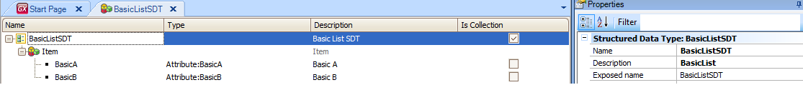

Like in SDT on Form, when you develop for smart devices, you can show in a layout info loaded in a Structured Data Type. That's necessary in many cases. Sometimes the data or fields you want to show in a grid are not altogether in some related tables and there is no way to join and show them. In other cases data have to be collected from external services and in other ones you need to do some more complex navigation to get them as you want. In other words, it's not as simple as listing some fields with some order and filters. To show data, read-only, in grids in these cases, what you need to know is that it's all about basing the grid on a Collection (Structured Data Type) and loading it from some source (Data Provider object, Procedure object or Web Services). Note that this is independent of how (using what Control Info) the grid is shown and therefore the mechanism is the same to show a listing, map, graph, or whatever in these cases; and this is only valid for read-only scenarios (not for editing in grids). SampleLet's suppose we want to show columns BasicA and BasicB in a grid, A and B aren't in the database or have no relationship, etc. 1) Define a Collection BasicListSDT with BasicA and BasicB as follows:  2) In the list or detail section where you want to place the grid, define a variable &BasicListSDT based on BasicSDT data type. 3) Drag and drop the variable from the Toolbox to the Layout. GeneXus will let you in that moment select the fields of the Collection you want to show in the grid and after that create a grid on the layout with the selected fields. 4) Load it in the Refresh event.
Event Refresh
&BasicListSDT = BasicListDP()
EndEvent
BasicListDP is a Data Provider object that returns a variable based on BasicListSDT. It could also be a Procedure object, external Web Service, etc. Actions over grid elementsCase you need to execute an action when a line is selected, just define that event with the "current" value as parameter: &BasicListDP.CurrentItem.<element>, for instance: Event 'DetailedView' SDPanel.call(&BasicListDP.CurrentItem.BasicA) Endevent Finally set that event as the Grid Default Action. ConsiderationsIf needed, you can add extra controls like Textblocks, Images, Variables, etc, to the grid created before. As of GeneXus X Evolution 3 it is also possible to use the Load event for SDT based grids in order to manually load variables or change dynamically the properties of controls inside the grid. For instance:
Event Refresh
&BasicListSDT = BasicListDP()
EndEvent
Event Load
If SatisfiesSomeCondition(&BasicListSDT.CurrentItem.BasicA)
&SomeVariable = GetSomeValue()
Image1.Visible = True
Else
Image1.Visible = False
EndIf
EndEvent
NoteIf you want to not show a collection and show some fields of an SDT, you can do it the same way as in the sample above. The only difference is that GeneXus in that case won't create a grid, but place the fields as separate controls with labels in the layout. Download an xpz of this sample here: SDTinSD |
| Backlinks |
| Category:Panel object |